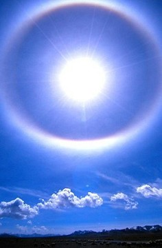
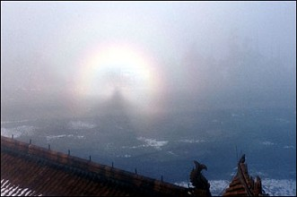

日晕．佛光
冯冯
五月六日上午九时四十分，四川乐山大佛头顶天空出现了一圈五彩佛光，直径大约三百公尺，内红外紫，时暗时明，十一时许，光环陡然增强，直到下午才散去，前后持续三四小时之久，成千游客纷纷赞叹，不少人念佛跪拜，认为是千年难得一见的奇迹。
“二００二年五月四日，新闻报告，广东湛江市上午出现了“日晕”，从上午十时至下午二时，环绕太阳几圈彩色光环。民众纷纷电话询问气象台，答案是天气将变化的先兆，并无神奇。
五月五日，北京市上空也出现日晕，从中午十二时左右，直到下午二时，内红外紫的日晕光环，环绕住太阳，非常壮观，市民称奇，佛教人士称为“佛光”，纷纷膜拜。气象台解释：高空上出现了冰晶构成的卷层云，阳光折射云层，分解成七彩的虹霓，虽非常见，却不是什么佛光。
四川峨眉山金顶峰的“佛光”很出名，是清晨太阳初升，阳光照在云层的冰晶小粒形成的日晕虹影，人被阳光照到，人影就射到云层，人影在虹彩光圈之内，看来很像端坐的佛像，游客常常到金顶上去照“佛光”，看那投射在峰下云雾上面的自己的光环中佛影。
有“日晕”可观的地方不少，加拿大温哥华上空，一年出现好几次日晕，多是在四五六月份，阳光投射在较低的冰晶微粒云层，产生的巨大彩虹光环。有时出现多达三重，有时竟出现在我家上空，可能别人从他家往上观望，也会发现光环在他家上空，并非我所独有。
佛教人士相信这是佛光，科学家说是阳光投射在冰晶云层的折射。德国也有两处山峰以日晕光环出名，他们说是基督之光，另一处德国居民却说是魔鬼之光，各有各的看法！
佛经纪载称之为“帝释弓”，说那是三千大千世界之主帝释的光。希腊人称之为“太阳神阿波罗之光”，埃及人也称为“太阳神之光”。
在飞机上望外，也常可见到飞机的影子投射在下面的云层上──在彩虹的光圈之内，光环随着飞行，原理是简单的“阳光投射在冰晶云层上”。但是什么力量使阳光这样作用？信佛的人不免就归功于佛力，信主的人自然是说由主所创造。这倒不必争论。
原载《佛网》网站
2000 年 ── 2002 年